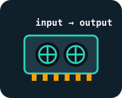
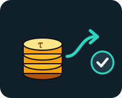

Miner
Does the work: answering questions, renting out a graphics card, writing code, forecasting the weather… depending on the subnet.
For people who have never used a blockchain
A network where thousands of computers make their artificial intelligences compete, and where a currency, TAO, rewards the best ones. Every twelve seconds, with no boss.
Imagine a cooking contest that never ends.
Nobody runs the contest: the rules are written in a program, and the accounts are kept in a public ledger, the blockchain.

Does the work: answering questions, renting out a graphics card, writing code, forecasting the weather… depending on the subnet.
Tests the miners, gives them scores and writes those scores to the blockchain.

Lends (“stakes”) TAO to a validator or a subnet, and receives a share of the rewards.
21,000,000
TAO at most, never more, like the 21 million bitcoins
12 s
between two blocks: the prize pot drops 7,200 times a day
0.5 τ
created with each block since the first halving, in December 2025
128
active subnets in October 2026, out of 256 possible slots
Author and podcaster Mark Jeffrey explains Bittensor from A to Z on the JM Crypto channel.
Source: JM Crypto, “The Greatest Bittensor Explanation of ALL TIME (feat. Mark Jeffrey)”, YouTube, 2026.